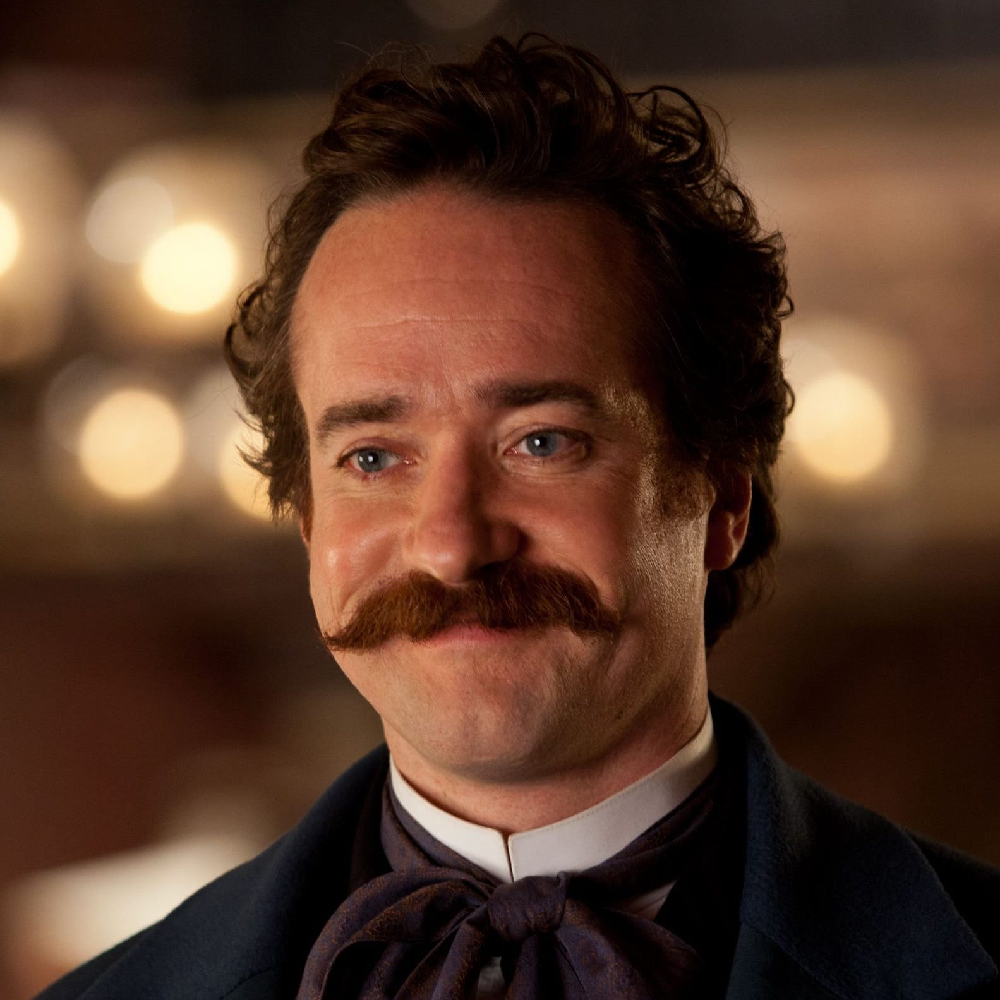
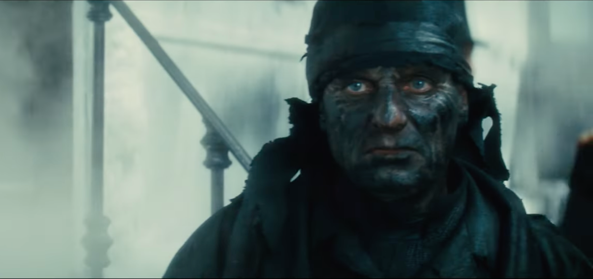

Narrative Priming

In Anna Karenina, Tolstoy employs many narrative devices to complement the device of narrative priming. This device establishes specific attitudes and expectations in the reader, enabling them to understand characters and future events better. By using this device, the author primes the reader to judge and interpret aspects of the novel as it unfolds, rather than being caught off guard. A combination of narrative devices must be invoked for narrative priming to be successful. One example is early evaluative characterization, in which characters are introduced and form clear judgments of one another, in turn shaping the reader’s perception of them. Another is emotional focalization, in which the world is filtered through a character’s dominant emotional state, allowing the reader to understand their viewpoint. These are two examples of narrative devices that can guide the reader's expectations of certain outcomes, which is an effective way to use narrative priming.
Tolstoy uses narrative priming to prepare the reader for the negative aspects of Vronsky’s character. Already, the novel has established Stiva as a bad husband and an unserious man through his affair and poor financial state. Therefore, when Stiva speaks well of Vronsky to Levin, the reader is instantly on guard against the truth of Stiva’s words because of previous events indicating Stiva’s poor judgment. The readers also learn about Vronsky from Kitty. Unlike Stiva, Kitty is portrayed as a kind, thoughtful, and trustworthy girl. When thinking about her suitors, Levin and Vronsky, she “[dwells] with pleasure and tenderness on the memories of her relationship with Levin,” but with Vronsky, “there was something awkward mixed in with her memories… some kind of falsity” (Tolstoy 49). These feelings instantly alert the reader that Vronsky may have ill intentions, because Kitty is a character unlikely to think poorly of someone unless there is a just reason. The contrasting views of Stiva and Kitty prevent the reader from being surprised in Chapter 16, when Vronsky reveals he has no serious intentions for Kitty and has been leading her on without any intent of reciprocating her feelings.
When Anna enters the novel, Tolstoy again relies on narrative priming to suggest the turbulence she will bring. At the train station Anna arrives at, a watchman is crushed by a train and dies. A chaotic scene ensues as people rush to the scene and call out details of what happened. No other character introduction in the novel has been accompanied by death, and even Anna pronounces that this is “a bad omen” (Tolstoy 68). This negative interruption of the introduction of the title character leads the reader to expect further calamities to follow Anna. This tragedy sets the stage for Anna’s downfall and eventual suicide.
Another instance of narrative priming occurs when Levin and Anna meet for the first and only time. This scene allows for the two plotlines to merge in a monumental moment. Once again, the reader hears, through Kitty’s trustworthy voice, how Levin is struggling in Moscow and has been inauthentic. Furthermore, Levin has previously demonstrated prudence, but in Moscow, he is spending money without thought and selling crops for lower prices. Learning about Moscow’s effect on Levin’s character from Kitty, who is very observant, and finding out about Levin’s current financial decisions, primes the reader for the fact that Levin is making poor choices. Then, when Levin is at a club, Stiva suggests they visit Anna. Since this proposal comes from Stiva, a man with questionable morals and decision-making, and at a time when Levin is behaving poorly, the reader is instantly on guard for what the meeting may bring. Anna’s attempted seduction of Levin comes as no surprise to the reader, who has witnessed her success with Vronsky and then attempts with other men who visit their house. In another context, such as the countryside, the reader would be shocked that Levin falls under her spell. However, Tolstoy has already set the stage for Moscow’s negative effect on Levin, and therefore, it comes as no surprise that Anna enters Levin. The emotions on both sides during this combination of plotlines are set up by Levin’s current behavior in the city, Anna’s flirtatious reputation, and Stiva’s instigating the event.

Works Cited
- Tolstoy, Leo. Anna Karenina. Translated by Rosamund Bartlett, Oxford University Press, 2014.